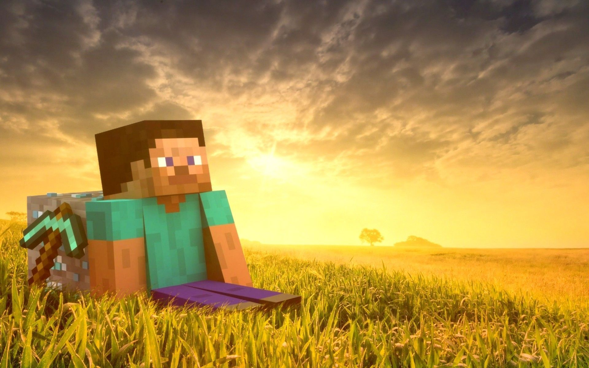

Minecraft este un joc video de tip sandbox, dezvoltat de Mojang. Jocul a fost creat de Markus "Notch" Persson în limbajul de programare Java. După mai multe versiuni de testare tip “Beta” a fost lansat ca alfa public cu plată pentru computere în 2009, înainte de lansarea jocului complet în noiembrie 2011, Jens Bergensten preluând dezvoltarea. Minecraft a fost de atunci portat pe alte câteva platforme și este cel mai bine vândut joc video din toate timpurile, cu 200 de milioane de exemplare vândute și 126 de milioane de utilizatori activi lunar începând in 2020.
Versiunea pentru Android a fost lansată o lună mai devreme în 7 octombrie, iar versiunea iOS a fost lansată în 17 noiembrie 2011. Versiunile pentru console de jocuri au fost lansate astfel: Xbox 360 în 9 mai 2012, PlayStation 3 în 17 decembrie 2013, PlayStation IV în 4 septembrie 2014 și PlayStation Vita în 14 octombrie 2014. Versiunea de Xbox One a fost lansata în 18 decembrie. Versiunea de PlayStation 4 a fost lansata în 20 decembrie. Toate versiunile jocului sunt permanent în dezvoltare și primesc actualizări periodice.
Gameplay: În Minecraft, jucătorii explorează o lume 3D cubică, cu teren infinit. Printre celelalte activități din cadrul jocului se numără explorarea, adunarea resurselor, meșteșugul și construirea uneltelor, dar și lupta. Jocul dispune de unele moduri, printre care se numără Survival, Creative, Adventure și Spectator. În modul “Survival” jucătorii trebuie să obțină resursele de unii singuri, folosindu-le ca să avanseze progresiv, în timp ce în modul “Creativ” jucătorii au posibilitatea să se folosească de creativitatea lor prin intermediul unor resurse nelimitate. Modul “Adventure”, de dificultate ridicată, pune la dispoziție unele lumi create de alți jucători. Denumirea provine din limba engleză, unde “mine” înseamnă „mină” iar “craft” „meșteșug”.